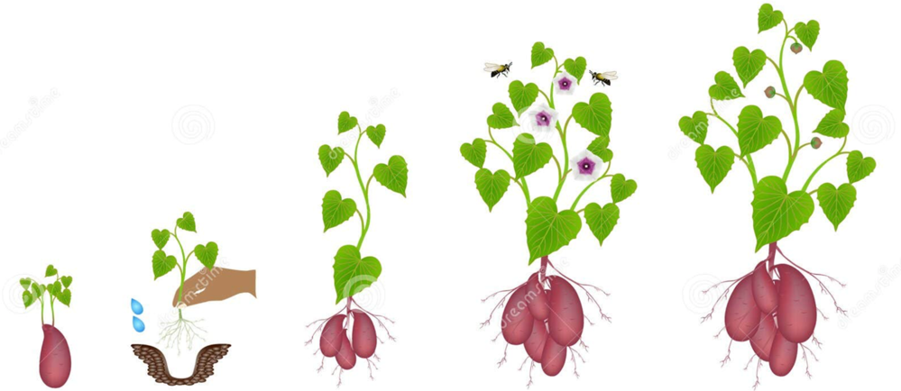

 
       <tr>
            <td colspan="4">
              <div class="enemies">
                <figure>
                  
                  <figcaption>4月13日测量红宝石(1)芯部：3.6cm</figcaption>
                </figure>
                <figure>
                  
                  <figcaption>4月13日测量红宝石(2)芯部：6.3cm</figcaption>
                </figure>
                <figure>
                  
                  <figcaption>4月13日测量达科他(1)芯部：5cm</figcaption>
                </figure>
                <figure>
                  
                  <figcaption>4月13日测量达科他(2)芯部：9cm</figcaption>
                </figure>
              </div>
            </td>
          </tr>


          <tr>
   <td colspan="2">防治方法：田间放蓝色色粘虫板，捕捉成虫，监测成虫数量无机药注射苗眼或沾根.</td>
   <td class="category" ></td>   
</tr>
      <table>
        <thead>
          <tr>
            <th colspan="4" class="section-title">一、基本信息</th>
          </tr>
        </thead>
      </table>

           <div class="right-column">
              
              
            </div>


<section class="Image_Carousel">
    <div class="carousel-container">
        <div class="carousel-slide">
            
            
            
            
            
            
            
            
            
            
        </div>
        <button class="carousel-btn prev-btn">&#10094;</button> <button class="carousel-btn next-btn">&#10095;</button> <div class="carousel-dots">
            </div>
    </div>
</section>

<section class="Image_Carousel">
      
    </div>
</section>


 <td class="category"> </td>


